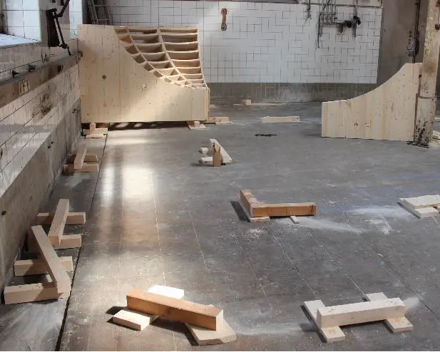
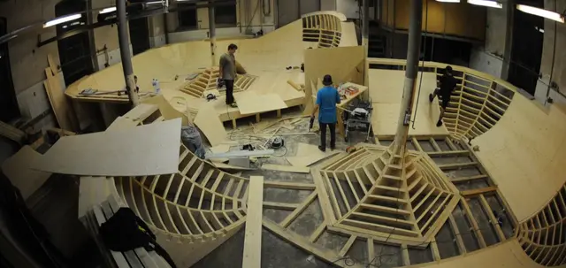
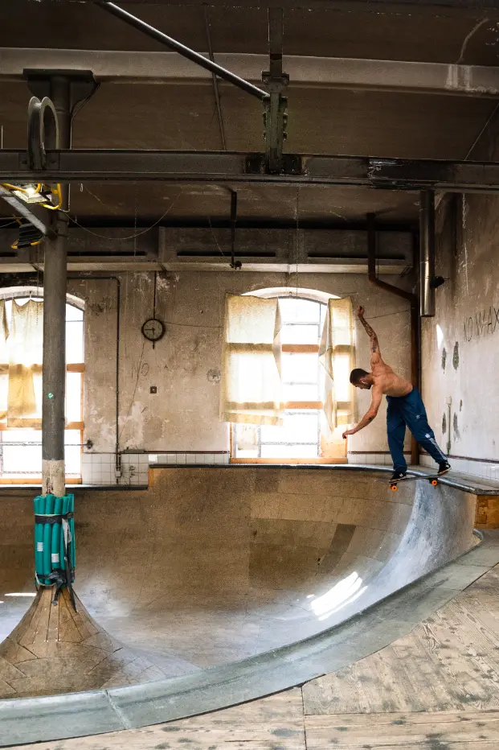

Historique · hommage
Le bowl
Définitivement fermé
Un bassin aux parois recourbées, dessiné, conçu et construit par les membres de l’association dans un local annexe de 180 m². Le bowl de La Chaux-de-Fonds est définitivement fermé : il a été démonté.
[À FOURNIR : date exacte du démontage]
En chiffres
Le bowl en chiffres
- local annexe
- 180 m²
- de travail, réparties sur une année
- près de 1500 h
- obtenus et investis dans les installations
- près de 100’000 fr.
- si la réalisation avait été confiée à des entreprises privées
- environ 250’000 fr.
Coupe A–A
Deux profondeurs, une ligne
- Margelles en béton en guise de bordure.
- Partie peu profonde : profondeur h1 [À FOURNIR]
- Changement entre deux niveaux de profondeur.
- Partie profonde : profondeur h2 [À FOURNIR]
- Ligne de ride, illustrative.
- Objet
- Bowl de La Chaux-de-Fonds
- Local
- Annexe de 180 m²
- Construit
- À partir de 2013, par les membres
- Statut
- Définitivement fermé
- Échelle
- Schématique, d’après les photos
- Plans
- [À FOURNIR : dimensions ou plans du bowl]
Un projet d’envergure
Conçu pour ce local, construit à la main
À partir de 2013, un bowl a été érigé dans un local annexe de 180 m². Comme pour le skatepark, le design du bowl, sa conception technique et sa construction ont été assumés par les membres de l’association Park N’ Sun.
La construction était rendue complexe par la déclivité du sol, les formes arrondies, notamment autour des poteaux du local, le changement entre deux niveaux de profondeur et l’utilisation de margelles en béton en guise de bordure. Le design était réfléchi spécifiquement pour ce local.
Réalisé bénévolement, mais avec une qualité professionnelle grâce au concours de menuisiers et serruriers membres et amis de l’association, le bowl a nécessité près de 1500 heures de travail, réparties sur une année.


= 1280px) 660px, (width >= 640px) 100vw, 100vw" width="1258" height="595" loading="lazy" alt="Le chantier vu de haut : la charpente en bois des courbes du bowl, couple après couple, avec des bénévoles au travail." />
Soutiens
Qui a rendu ça possible
Dès l’origine du skatepark, ces travaux ont été soutenus financièrement par la Ville de La Chaux-de-Fonds à travers le Parlement des Jeunes et le Service des Sports, la Loterie romande, la fondation Helvetia pour la Jeunesse et plusieurs autres contributeurs privés.

StreetDays 2021
Le contest au bowl
Pour l’édition spéciale des 10 ans du StreetDay, aux Anciens abattoirs avec le Service des Sports, l’association a organisé un contest de skateboard avec un cashprize au bowl.
Vidéo
Vidéo d’hommage au bowl
[À FOURNIR : vidéo de Léo]
Hommage au bowl, 16:9, avec sous-titres.
Et après
Ce qu’il reste du bowl
Le projet de rénovation prévoyait de démonter le bowl et d’en intégrer des éléments au skatepark, pour préserver l’identité d’un bowl qui faisait la fierté des membres de l’association et des usagers.
[À FOURNIR : éléments du bowl réellement réutilisés, photos et témoignages]